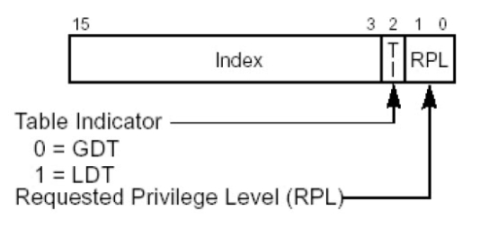
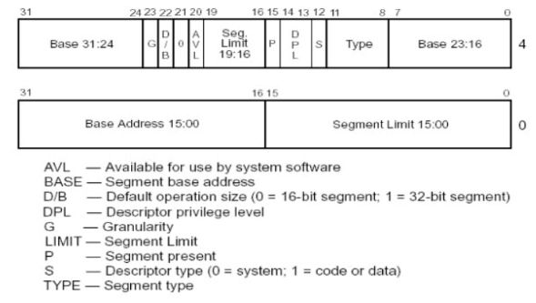

保护模式笔记
段寄存器
1 | mov dword ptr ds:[0x123456],eax |
ds就是段寄存器，真正读写的地址是：ds.base + 0x123456
其中段寄存器有8个
ES（）CS（）SS（）DS（）FS（）GS（）LDTR（）TR（）
段寄存器的结构
32位的段寄存器一共96位，16位可见，80位不可见（12个字节）
1 | struct SegMent{ |
上面是用结构体来描述段寄存器的内容。
段寄存器的读写
READ
段寄存器读取的时候只能读可见部分，16位，因此读的时候只能读16位
1 | MOV AX,ES |
WRITE
段寄存器写入的时候是要写96位
1 | MOV DS,AX |
那么一个问题浮出水面，段寄存器赋值的时候可以写入96位，但是传递给的是一个16位的寄存器，那么另外的80位从哪里得到呢？
GDT 表和 LDT表
GDT是全局描述符表，LDT是局部描述符表，要想填写完整段寄存器，需要拿着一个索引到GDT表或者LDT表去查找、这个索引就在传递的16位寄存器的数据当中。而这16位的数据对应到段寄存器的部分是段选择子。
段选择子

段选择子分为三部分，一个是Index，一个是Table Indicator 还有一个是请求特权级别RPL
- Index
- 13位，起到索引的作用，从GDT表或者LDT表中查找数据
- 索引查找的规则是将索引值乘以8再加上GDT或者LDT表的基地址，就是要加载的段描述符位置，也相当于2进制左移三位再加上基地址。
- Table Indicator 表指示器
- 用来选择是从哪张表去选取
- RPL 请求特权级别
- 其有两位，表示了0,1,2,3四种CPU特权访问级别
- 其代表这
段描述符
段描述符是64位的数据，占据了8个字节，下面是其结构：

首先有个大致的印象，首先发现其Base属性和Limit被割裂到不同的部分，这主要是CPU寄存器升级为了向下兼容才形成的这样的情况。回顾段寄存器结构，
- Base一共32位，在段描述符描述完整
- Limit一共32位，而在段描述符中只描述了4+16=20位
- 其他部分充当段属性，应当是16位，在段描述符描述了4+8=12位
以上并不能构成整个80位的除去段选择子的剩下部分，这是我们的问题，留在下面解决。